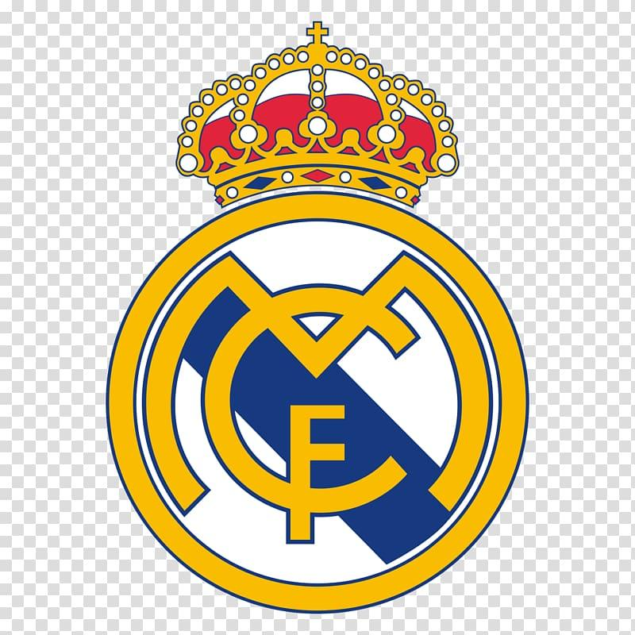
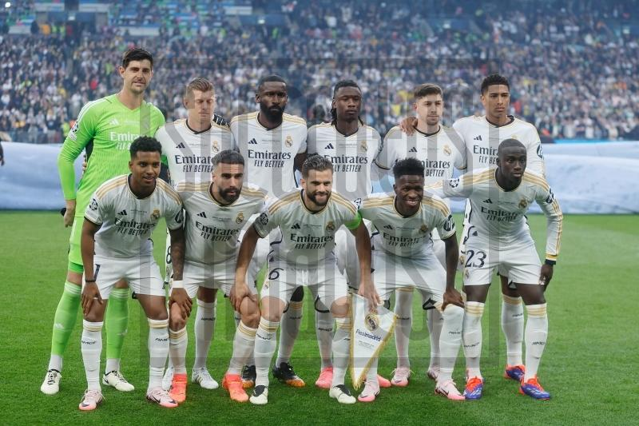
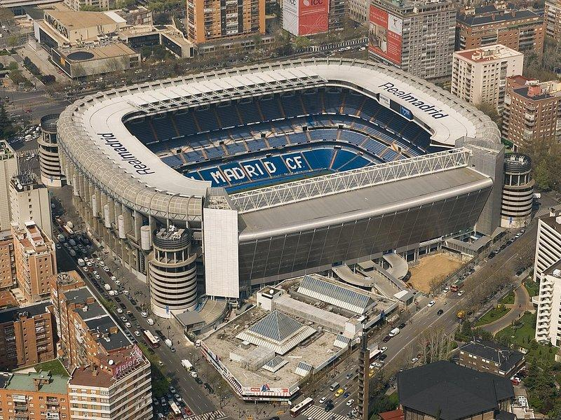

El Real Madrid Club de Fútbol fue fundado el 6 de marzo de 1902 en Madrid, España. Es uno de los equipos más reconocidos e importantes del fútbol mundial.
A lo largo de su historia ha destacado por sus grandes jugadores, sus títulos y su participación en las competiciones nacionales e internacionales.
Sus colores tradicionales son el blanco, símbolo que identifica al equipo y a sus aficionados.
Grandes futbolistas que dejaron huella en la historia del equipo.
Uno de los máximos referentes del club y una figura histórica del fútbol.
Jugador francés recordado por su talento, técnica y elegancia.
Un histórico delantero que representó el espíritu madridista.
Legendario portero y uno de los capitanes más queridos del equipo.
El Real Madrid cuenta con una trayectoria llena de éxitos en diferentes competiciones.
Su competición internacional más emblemática.
Numerosos campeonatos de la liga española.
Un importante título del fútbol español.

El estadio Santiago Bernabéu es la casa del Real Madrid. Se encuentra en Madrid, España, y es uno de los escenarios más reconocidos del fútbol mundial.